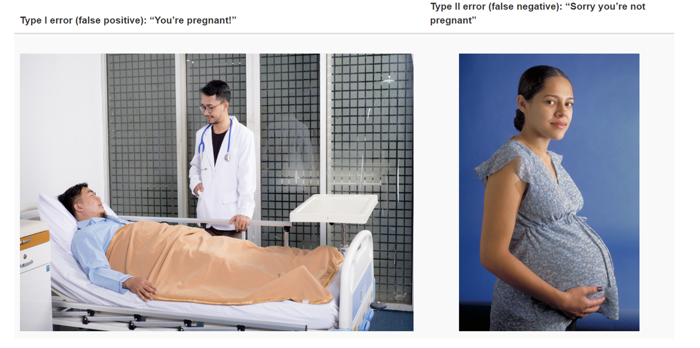

Before diving into the bioinformatics of RNA-seq experiments, it’s good to take a step back and think about experimental design and refresh your statistical knowledge. After all, an RNA-seq experiment is also an experiment like any other.
Hypothesis testing
In an RNA-seq experiment, you will analyze the expression levels of thousands of genes. Before doing that, let us consider statistical tests and their associated p-values for a single gene. Let’s say you are studying a plant gene called “heat stress trancripion factor A-2 (HSFA2)”, whose expression might be induced by…. heat stress (you might have guessed that). You could phrase your null hypothesis:
“The average HSFA2 gene expression is the same in normal conditions and under heat stress in my Arabidopsis seedlings”
The corresponding alternative hypothesis could then be:
“The average HSFA2 gene expression is different under heat stress compared to normal conditions in my Arabidopsis seedlings”
You set up an experiment in the greenhouse. You grow Arabidopsis thaliana seedlings, and give half of them a heat stress treatment. Then, you take samples of 20 plants in both control and heat stressed conditions, and measure the expression levels of HSF2A. Let’s visualize this in a boxplot made in R, using the ggplot2 package.
Indeed, HSF2A is highly expressed in heat stressed plants. The thick line of the boxplots show the median HSF2A expression in both groups. The median is a measure of central tendency. You will also see that the individual datapoints are dispersed around the boxplot: quantifying this gives us a measure of the spread of the data. An example of such a measure of spread is the standard deviation. It looks like our heat stressed plants display a more narrow spread of the data, compared to the plants grown in the control condition.
Question
Can you name another measure of central tendency? And another one for the measure of spread?
Answer
Another often used measure of central tendency would be the mean. As for the measure of spread, the variance (square of the standard deviation) or the standard error (standard deviation divided by the square root of the number of observations) are often used.
Let’s test whether the means of the two groups are equal or not. We do this with a two-sample t-test.
R
t.test(x = control$expression,y = heat_stress$expression,alternative ="two.sided" , var.equal =FALSE, # important as the variance do not seem equalconf.level =0.95) # this corresponds to alpha = 0.05
Welch Two Sample t-test
data: control$expression and heat_stress$expression
t = -12.237, df = 25.636, p-value = 3.312e-12
alternative hypothesis: true difference in means is not equal to 0
95 percent confidence interval:
-1.600116 -1.139603
sample estimates:
mean of x mean of y
1.970023 3.339883
Because the p-value < 0.05, we can safely reject our null hypothesis, and claim that we have discovered that Arabidopsis significantly upregulates the expression of HSF2A under heat stress. Sounds like it’s time to write this down and submit a manuscript to Nature!
Statistical power
Statistical power is the probability of your experimental sample population to detect a difference (in gene expression differences), given that an an effect actually exist in your experimental setup. There are two main error one could make when testing hypotheses. Type I errors occur when the null hypothesis is rejected wrongly — you detect a significant difference while in reality there is no difference in gene expression (“false positive”). Type II errors also are common in hypothesis testing — they arise if you accept the null hypothesis when in fact a treatment effect exists (“false negative”).

Type I and Type II error - schematic visualization
The power of an experiments is affected by several factors:
The number of replicates: more biological replicates results in a higher power
Size of the effect: bigger differences between groups are easier to detect
Variability of the data: less within-group variation makes it easier to detect differences
Confidence level threshold: usually, this is 0.05, but we can make our analysis more or less stringent by changing this to 0.01 or 0.1
What determines the power of an RNA-seq experiment?
RNA-seq experiments measure the expression levels of thousands of genes simultaneously, meaning we perform thousands of statistical tests at once. To avoid making too many false discoveries (type I errors), we have to correct for multiple testing. However, it also reduces statistical power — increasing the chance of missing real differences (type II errors). As a result, RNA-seq experiments can have lower power, especially for detecting small or subtle changes in gene expression. So, how do we deal with that? We have a few parameters to play with when designing an RNA-seq experiment, including deciding the number of reads per sample, and the number of samples per treatment.
A fun tool to play with these parameters is the following RNASeq Power calculator. For example, with sequencing depth 50 and coefficient of variation 0.3, you would need about 5 biological replicates to detect genes with 100% increase in gene expression (effect size 2) with a power of 0.9:
In addition, notice how hard it is to detect subtle differences in gene expression: for genes with a 50% difference in expression, you would already need 14 biological relicates.
Question
Try playing with the sequencing depth. Increase it 10-fold, another 10-fold, and even much higher. Does it reduce the amount of biological replicates needed to detect differences in gene expression with the same power?
Answer
It decreased the number of required replicates slightly, but the gain plateaus rather quickly. In other words, sequencing deeper does not increase the power of an RNA-seq experiment that much.
Question
Change the calculator to the following settings:
Variable to estimate: power
Sequencing depth: 20,50,100,400
Number of samples: 3,5,7,10
Coefficient of variation: 0.4
Effect: 1.25,1.5,1.75,2
Alpha = 0.05
You now get 4 blocks of results, where the power is estimated depending on variable depth, number of samples, and effect size.
What can you conclude from these estimations? Discuss with your neighbour if you are in a workshop with other participants.
The major conclusion is the same as before: increasing sample size is more important than sequencing depth to reach a higher detection power.
Small effect sizes are very hard to detect, even with rather large sample sizes, reaching a maximum power of about 0.25 with the current settings.
To connect these theoretical estimates to reality, let’s look at a study that examined RNA-seq power using real data. Liu et al., 2014 investigated this systematically in an RNA-seq experiment with a human cell line, by downsampling reads or samples. An exerpt from figure 1 is show below:
The figure shows the relationship between sequencing depth and number of replicates on the number of differentially expressed genes (DEGs) identified. It illustrates that biological replicates are of greater importance than sequencing depth. Above 10M-15M reads per sample, the number of DEGs increases marginally, while adding more biological replicates tends to return more DEGs. A similar conclusion was also reached by Schurch et al., 2016. So, if your experiment is limited by a certain sequencing budget, it is almost always better to add more replicates than to sequence more reads of a limited number of samples. However, there are some caveats here. Say you are interested in the transcriptome of a fungal pathogen growing in plant roots. In such samples, most reads will probably come from the plant roots, so you will need to sequence deeply (that is, many reads from the same sample) to find DEGs from the fungal pathogen.
Experimental design
In a typical biological experiment, you will encounter various sources of variation that are either:
Desirable because they are part of your experimental factors. For example, the genotype, treatment, or timepoint.
Undesirable because you are not interested in them. This could be: batch of RNA isolation, location of plants in the greenhouse, …
Undesirable variation is unavaidable, but there are some practices to limit their impact. First of all, make sure that you don’t confound your experimental factors with undesirable sources of variation by properly randomizing your treatments. For example, if you have too many samples to isolate RNA in one day of labwork, make sure you don’t isolate RNA from samples with genotype A on day 1, and genotype B on day 2. Instead, mix your samples of genotype A and B over your two RNA isolation days. Still, you should always record known sources of undesirable variation so you can correct for it later. There’s much more to be said about this, for more details see these materials from Harvard Chan Bioinformatics Core.
Concluding remarks
In this section, we refreshed our statistics knowledge, and discussed how this applies to RNA-seq experiments. Hopefully, this enables you to craft a well-designed and controlled RNA-seq experiment. Now, head to the lab or greenhouse, perform your experiment, and extract high-quality RNA. How to do this will depend on your study system, and is beyond the scope of this workshop. We will see you again when you get the sequencing reads from the sequencing provider. We will then jump into the bioinformatics pipeline required to check the quality of the reads, and map the reads to the genome of your organisms of interest.